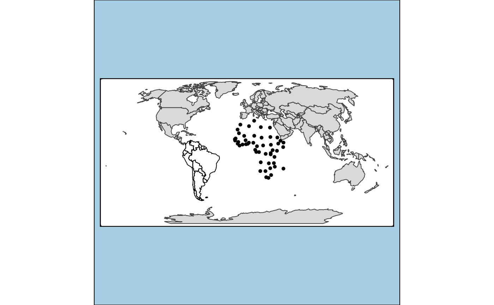

Creates a tmap-element that draws simple features. Basically, it is a stack of tm_polygons, tm_lines and tm_dots. In other words, polygons are plotted as polygons, lines as lines and points as dots.
tm_sf(
col = NA,
size = 0.02,
shape = 19,
lwd = 1,
lty = "solid",
alpha = NA,
palette = NULL,
border.col = NA,
border.lwd = 1,
border.lty = "solid",
border.alpha = NA,
group = NA,
...
)color of the simple features. See the col argument of tm_polygons, tm_lines and tm_symbols.
size of the dots. See the size argument tm_symbols. By default, the size is similar to dot size (see tm_dots)
shape of the dots. See the shape argument tm_symbols. By default, dots are shown.
width of the lines. See the lwd argument of tm_lines
type of the lines. See the lty argument of tm_lines
transparency number. See alpha argument of tm_polygons, tm_lines and tm_symbols
palette. See palette argument of tm_polygons, tm_lines and tm_symbols
color of the borders. See border.col argument of tm_polygons and tm_symbols.
line width of the borders. See border.lwd argument of tm_polygons and tm_symbols.
line type of the borders. See border.lwd argument of tm_polygons and tm_symbols.
transparency of the borders. See border.alpha argument of tm_polygons and tm_symbols.
name of the group to which this layer belongs in view mode. Each group can be selected or deselected in the layer control item. Set group = NULL to hide the layer in the layer control item. By default, it will be set to the name of the shape (specified in tm_shape).
other arguments passed on to tm_polygons, tm_lines and tm_symbols
data(World)
World$geometry[World$continent == "Africa"] <-
sf::st_centroid(World$geometry[World$continent == "Africa"])
World$geometry[World$continent == "South America"] <-
sf::st_cast(World$geometry[World$continent == "South America"],
"MULTILINESTRING", group_or_split = FALSE)
tm_shape(World) +
tm_sf()
